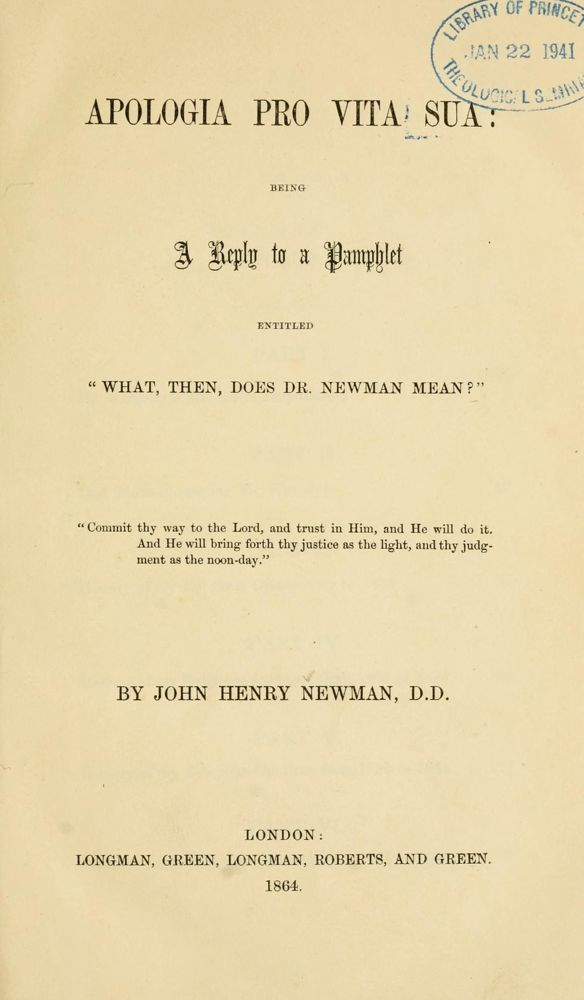
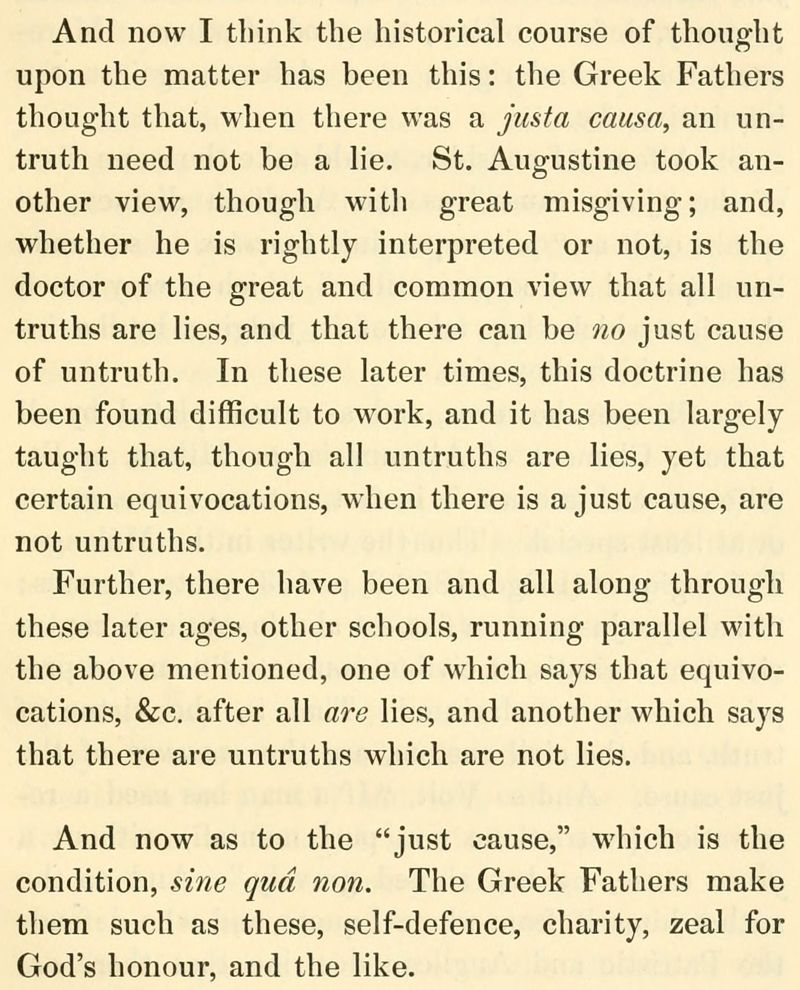

“The Greek Fathers thought that, when there was a justa causa, an untruth need not be a lie” (Appendix, p. 77)
English: London 1864, Appendix § 8, “Lying and Equivocation”, p. 77, scan n516. Highlighted: the words Lecky quotes.

And now I think the historical course of thought upon the matter has been this: the Greek Fathers thought that, when there was a justa causa, an untruth need not be a lie. St. Augustine took another view, though with great misgiving; and, whether he is rightly interpreted or not, is the doctor of the great and common view that all untruths are lies, and that there can be no just cause of untruth. In these later times, this doctrine has been found difficult to work, and it has been largely taught that, though all untruths are lies, yet that certain equivocations, when there is a just cause, are not untruths.
Further, there have been and all along through these later ages, other schools, running parallel with the above mentioned, one of which says that equivocations, &c. after all are lies, and another which says that there are untruths which are not lies.
And now as to the “just cause,” which is the condition, sine quâ non. The Greek Fathers make them such as these, self-defence, charity, zeal for God’s honour, and the like.
St. Augustine seems to deal with the same “just causes” as the Greek Fathers, even though he does not allow of their availableness as depriving untruths, spoken with such objects, of their sinfulness. He [p. 78] mentions defence of life and of honour, and the safe custody of a secret. Also the Anglican writers, who have followed the Greek Fathers, in defending untruths when there is the “just cause,” consider that just cause to be such as the preservation of life and property, defence of law, the good of others. …

| Newman (1864, App. p. 77) | Lecky (ch. IV, note 38) |
|---|---|
| though with great misgiving; and, | though with great misgiving, and, |
| there can be no just cause | there can be no just cause |
| In these later times … which are not lies. (two sentences and a paragraph) | . . . . |
| And now as to the “just cause,” which is the condition, sine quâ non. The Greek Fathers make them such as these, self-defence, | Now, as to the just cause, the Greek Fathers make them such as these—self-defence, |
| zeal for God’s honour (roman type) | zeal for God’s honour (italics, Lecky’s) |
The words are Newman’s, with two sentences joined and his clause on the sine quâ non dropped without a mark. The italics Lecky gives to “zeal for God’s honour” are his own emphasis and are not marked as such. His closing remark, that this “would include all of what are commonly termed pious frauds”, is his inference; Newman does not discuss pious frauds on these pages.
Further down the rabbit hole
Sources that Lecky cites in the notes next to the ones that cite this page.
- Augustine, Contra mendaciumAugustine rejects lying even to catch heretics
- Chrysostom, On the PriesthoodNot praise of lying, but defence of deceit for good ends
- Maury, Croyances et légendes de l’antiquitéPious frauds “fair play against heretics”, and the woman Simon Magus called the Thought of God
- Simancas, De Catholicis InstitutionibusAn inquisitor’s handbook: no faith with heretics, and torture
- Laing, Notes of a Traveller on the Social and Political State of France, Prussia, Switzerland, ItalyThe Swiss, moral in conduct yet irreligious
- Edwards, Freedom of the WillThe great Calvinist concedes that God is “the Author of Sin”, in a sense


Backlinks
Every place in Rationalism in Europe that links to this page (generated automatically when the site is built).
- Chapter IV, Part I: note 38